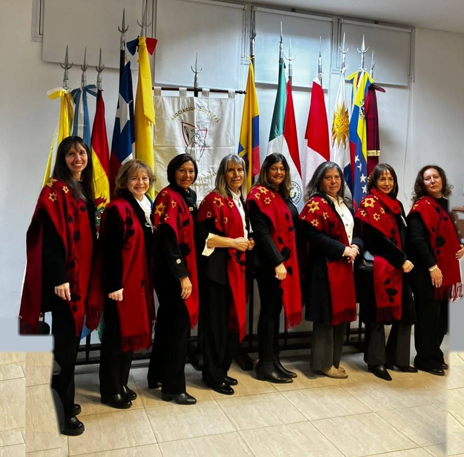
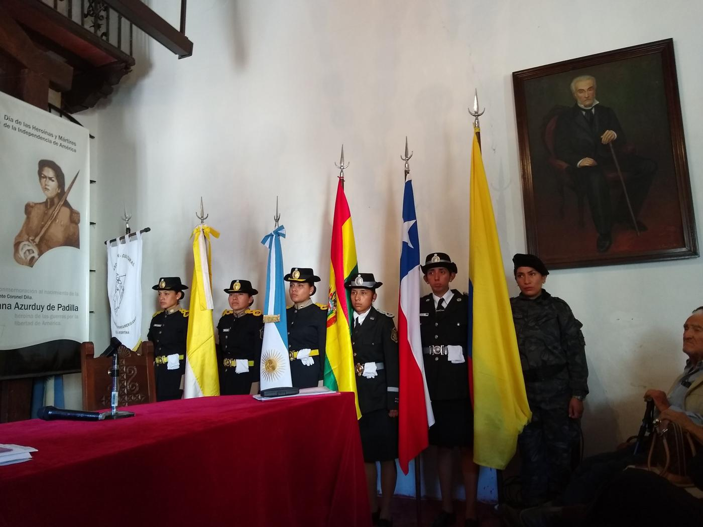

Carmen Puch
- Mención de la empresa en los actos del año
- Logo en la web de la Asociación
- Agradecimiento en nuestras redes
- Invitación al Día de las Heroínas
Asociación civil · Salta, Argentina · desde 2003
Asociación Cultural
Rescatamos, difundimos y honramos a las mujeres que lucharon por la Independencia de América, y hermanamos a los pueblos hispanoamericanos a través de la historia, la cultura, el turismo y las tradiciones.
Nuestra misión
Nacimos de una idea de mujeres salteñas para insertar en la actualidad la memoria de las heroínas de la emancipación y proyectarla a las nuevas generaciones, sobre los principios de unidad, fraternidad, amor y paz entre los pueblos de América.
Fueron grandes sin pretenderlo y encontraron la gloria sin buscarla en el camino del deber.

Lo que hacemos
Cada 12 de julio distinguimos a mujeres de las fuerzas, la policía y la cultura que se destacan por su entrega a la comunidad.
Jornadas de historia, cultura, turismo, tradiciones y sabores de Hispanoamérica, con historiadores, consulados y autoridades.
Recorremos a caballo las huellas de Güemes y de Juana Azurduy entre Salta y Bolivia, llevando la tradición gaucha a otros pueblos.
Galería
Alianzas institucionales
Tu marca junto a la memoria de las heroínas de América, ante autoridades, fuerzas de seguridad, consulados, instituciones educativas y medios de toda la provincia.
Premio Heroína, encuentros, marchas a caballo, conferencias y exposiciones.
Ver actividades →De la Ley 26.277 a la Casa de la Libertad en Sucre: más de veinte años de trabajo.
Ver línea de tiempo →Semblanzas de las heroínas de América y crónicas de nuestras actividades.
Leer publicaciones →Quiénes somos
Con una idea de mujeres salteñas, el 4 de agosto de 2003 quedó formalizada en Salta la Comisión Permanente de Homenaje a las Heroínas y Mártires de la Independencia de América Hispana. Ese mismo año obtuvo su personería jurídica (Res. Nº 320 del Ministerio de Gobierno y Justicia de la Provincia de Salta, 1 de diciembre de 2003) y se convirtió en la Asociación Cultural Heroínas Hispanoamericanas.
Nuestra entidad busca extender su labor a todas las provincias argentinas y a Hispanoamérica, con el deseo de convertirse en un instituto de investigación del accionar de las heroínas que intervinieron en la lucha por nuestra libertad, a quienes debemos nuestra nacionalidad.
Nuestra musa inspiradora es la Teniente Coronel Doña Juana Azurduy de Padilla, por su valor puesto al servicio de la Patria y por su feminidad de madre combativa junto a su esposo, Manuel Ascencio Padilla.

Para qué nos constituimos
Destacar la imagen y la heroica participación de la mujer en la emancipación hispanoamericana, formando un puente espiritual, histórico y cultural entre los pueblos de América.
Reunir a cada mujer que trabaja sobre los héroes y heroínas de la libertad americana, glorificando a Güemes con sus ideales americanistas y el carácter continental de su plan de campaña.
Fundamentar nuestra tarea en esos principios, porque tanta sangre derramada en nuestro suelo fue para lograr un solo grito: libertad de mi tierra americana.
Traer el pasado histórico femenino, insertarlo en la actualidad y proyectarlo en niñas, jóvenes y mujeres, enseñándoles el ideal por el que lucharon estas valiosas mujeres.
Comisión directiva
Presidenta
Autora del libro Las Mujeres de nuestra América Libre, presentado en la Casa de la Libertad de Sucre, Bolivia, en mayo de 2023.
Actividades y eventos
Encuentros, homenajes, marchas a caballo y conferencias. Las actividades nuevas se suman al principio de esta lista.
Antecedentes
Los hitos más sobresalientes de la Asociación, desde su creación hasta hoy.
Galería
1° Encuentro Internacional en la Sociedad Rural Salteña (2018) y 2° Encuentro en el Cabildo de Salta (2019). Tocá una foto para verla en grande.
Blog
Semblanzas de nuestras heroínas y crónicas de la Asociación.
Alianzas institucionales
La Asociación Cultural Heroínas Hispanoamericanas convoca a empresas e instituciones a acompañar sus actividades anuales: el Día de las Heroínas y Mártires de la Independencia de América, el Premio Heroína, los encuentros internacionales y las marchas históricas a caballo.
Patrocinar es asociar tu marca a valores de identidad, historia, reconocimiento a la mujer y hermandad entre los pueblos, con presencia en actos que reúnen a autoridades y a toda la comunidad salteña.
Audiencia
Niveles de patrocinio
Cada nivel lleva el nombre de una heroína. Los aportes y contraprestaciones se acuerdan con cada empresa.
Contacto
Para invitaciones, propuestas de actividades, asociarse o colaborar con la Asociación.